Plain sunflower plus 1 or 2 LEDs
A study only: no board has changed. Extra LEDs are pink; each plan shows the centre, then the whole board. The two drivers have exactly 234 LED positions, so extra LEDs aren't wired to anything yet.
| Plan | LEDs | Min pad gap, mm | Other LEDs moved | Largest move, mm |
|---|---|---|---|---|
| Now: plain sunflower, 234 LEDs | 234 | 0.36 | 0 | 0.00 |
| Plus 1, nothing else moved | 235 | 0.36 | 0 | 0.00 |
| Plus 2, nothing else moved | 236 | 0.18 | 0 | 0.00 |
| Plus 2, neighbours eased | 236 | 0.36 | 2 | 0.25 |
| Slide 0.3 mm, lower LED parallel to upper | 236 | 0.36 | 6 | 0.77 |
| Slide 0.5 mm, lower LED parallel to upper | 236 | 0.36 | 5 | 0.91 |
| Slide 0.3 mm, lower LED at 60 degrees | 236 | 0.36 | 3 | 0.53 |


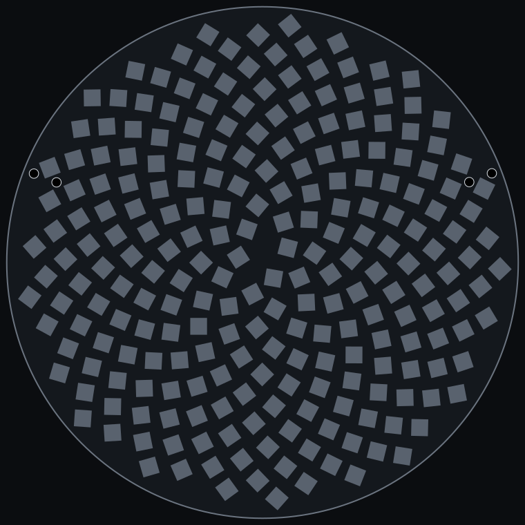
Tightest pad gap 0.36 mm.

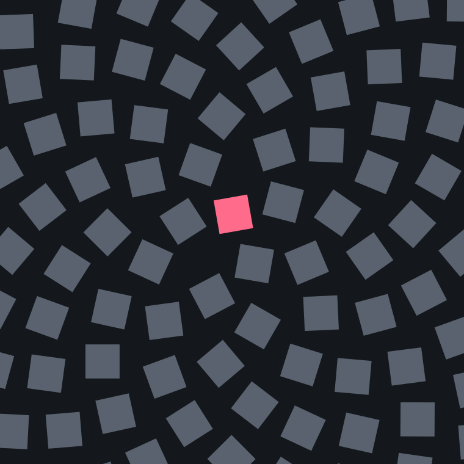

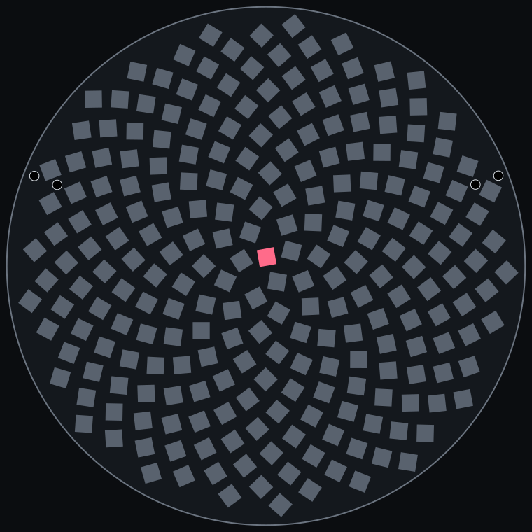
Tightest pad gap 0.36 mm.

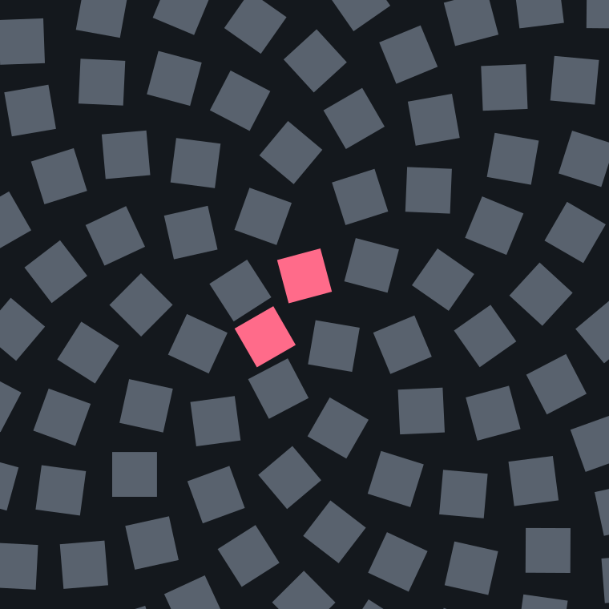

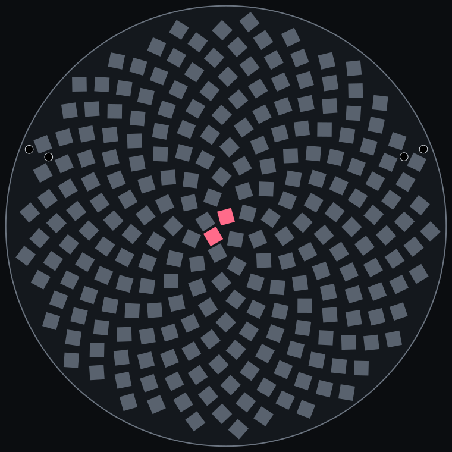
Tightest pad gap 0.18 mm.

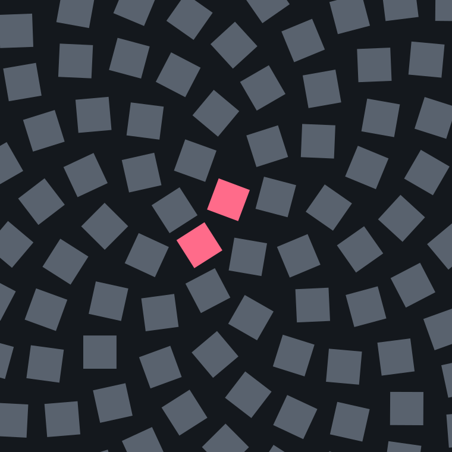

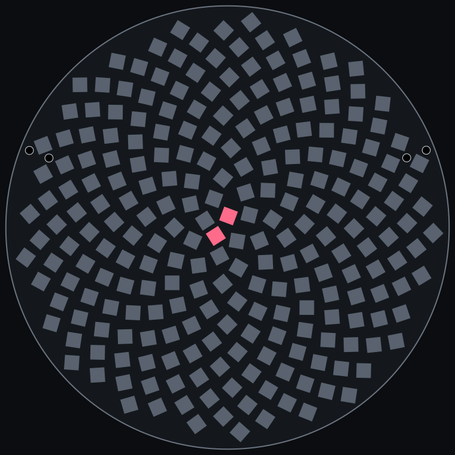
Tightest pad gap 0.36 mm.

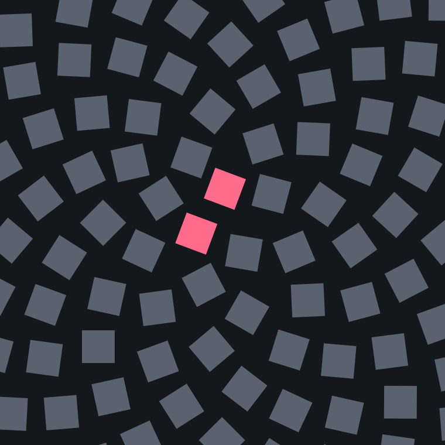

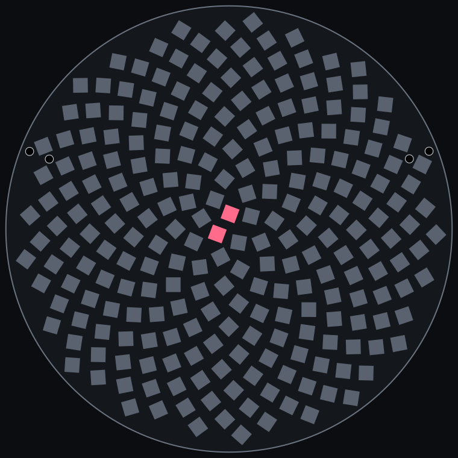
Tightest pad gap 0.36 mm.

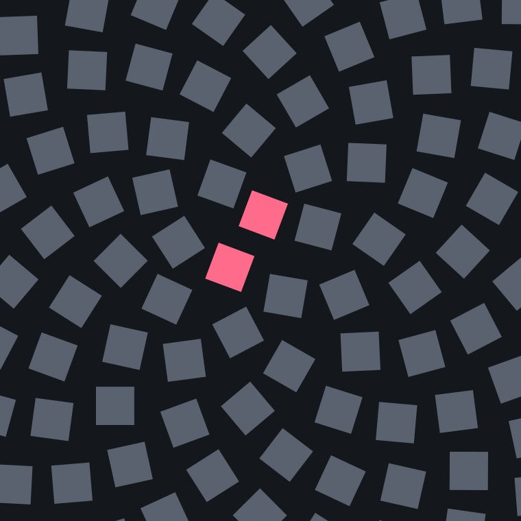

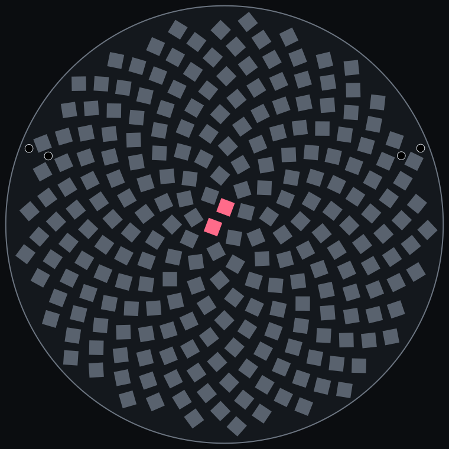
Tightest pad gap 0.36 mm.

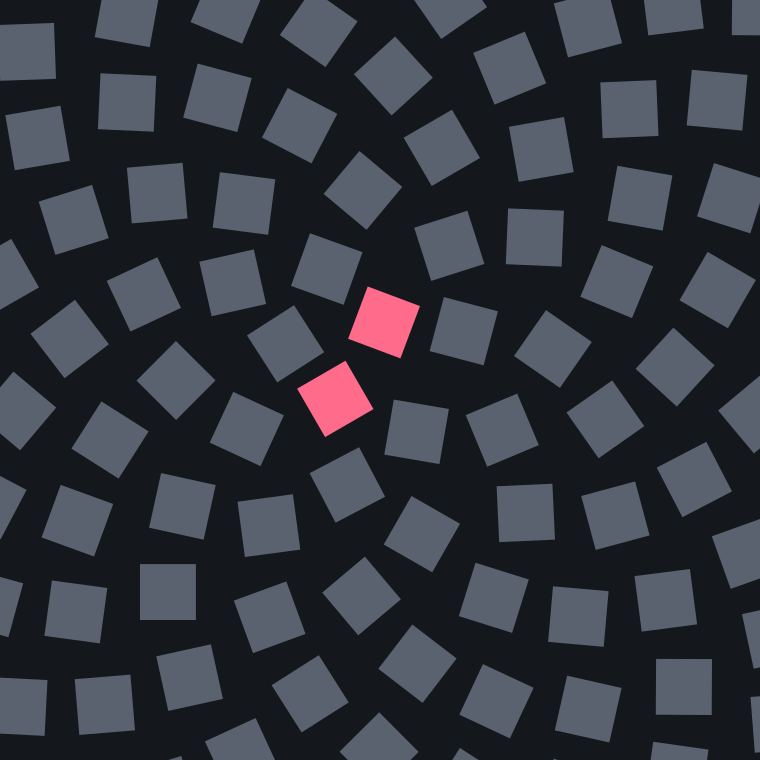

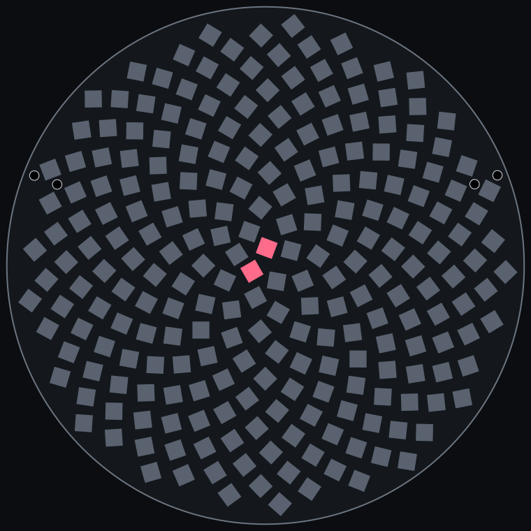
Tightest pad gap 0.36 mm.